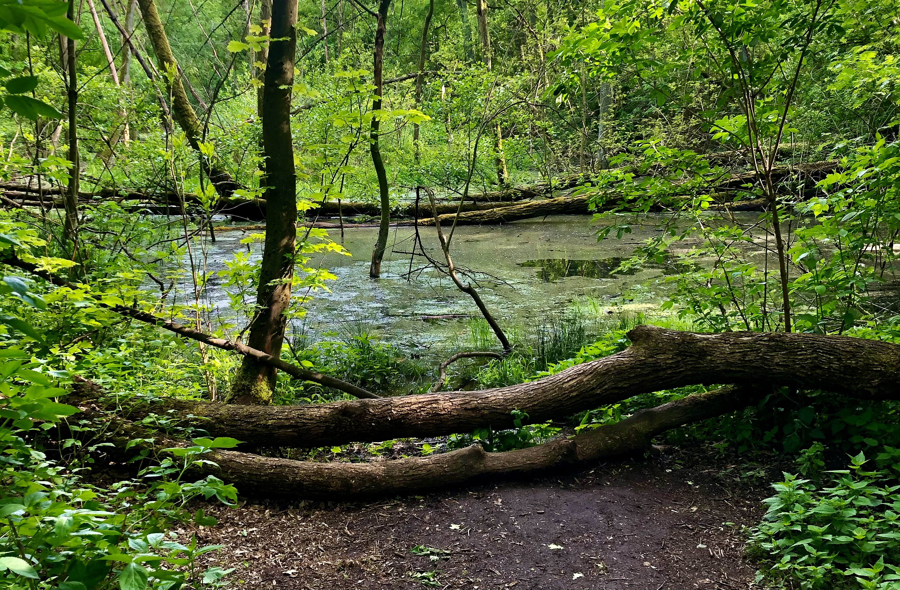
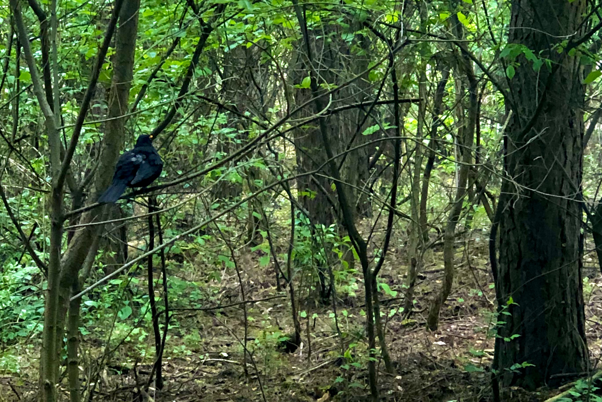
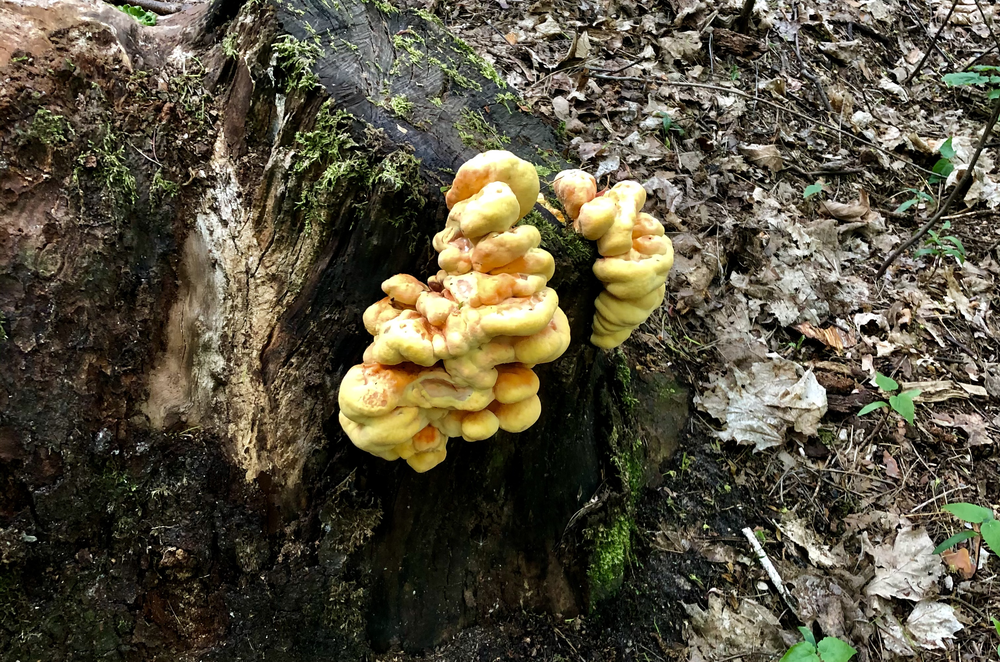

PRZYRODA NA TERENIE REZERWATU

FLORA
Niestety przez czynniki opisane w historii Rezerwatu przyrody Żurawiniec znacząca część flory dla której to właśnie rezerwat został założony, całkowicie zanikła.
Sytuacja zmienia się jednak od rewitalizacji z 2015 roku a pierwotna roślinność powoli powraca na teren torfowiska.
Dzisiaj na tym obszarze zaobserwować można głównie szuwary trzcinowe oraz lasy o charakterze łęgów i oslów ale i również rzadziej występujące gatunki takie jak np. Siedmiopalecznik Błotny czy Wąkotka Zwyczajna.

FAUNA
Zwierzęta na obszarze rezerwatu zauważyć można stosunkowo często.
Najczęściej występującymi ptakami są Kaczki które przeważnie spotkać można przy zbiornikach wodnych w południowej części rezerwatu oraz Kosy często występujące na poziomie runa leśnego w poszukiwaniu pożywienia.
Niekiedy zaobserwować można też jeże, wiewiórki i sarny.
Cały region Naramowic jest bardzo często odwiedzany przez watahy dzików. Rezerwat jest poniekąd ich domem ponieważ występują tam bardzo często. Nie ma jednak powodów do obaw, gdyż dziki przemierzają te tereny w poszukiwaniu pożywienia i nie są wrogo nastawione do ludzi.

WYBÓR PODSTRON